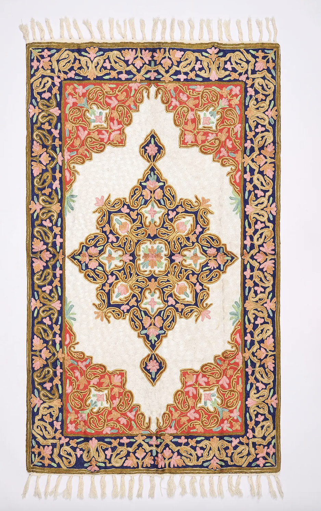

Papier-mâché art feels like fragility turned into beauty. Something as simple as paper is transformed into objects of elegance—boxes, vases, ornaments—covered in delicate floral designs and gold detailing. The romance here is refined and ornamental. It reflects the charm of Kashmiri culture—graceful, artistic, and deeply connected to nature. The intricate flowers and patterns almost feel alive, like a garden frozen in time. It’s a quiet kind of luxury—soft, detailed, and timeless.
Papier-mâché art in Kashmir has Persian origins. • Introduced in the 14th–15th century, possibly during the rule of Sultan Zain-ul-Abidin • Craftsmen from Persia were invited to Kashmir, bringing this technique • Over time, it evolved into a uniquely Kashmiri style, known for its fine painting Traditionally, it was used to make: • Decorative boxes • Pen cases • Religious and ornamental objects Today, it’s one of the most recognized crafts of Kashmir.
Papier-mâché art involves two main stages: 1. Sakhtsazi (Structure Making) • Paper pulp is molded into shapes • Dried and hardened to form the base object 2. Naqashi (Painting & Decoration) • Surface is smoothened and painted • Intricate designs are added using fine brushes
Papier-mâché is practiced by skilled artisans in Kashmir, often within families. • Work is divided: some make the structure, others do painting • Skills are passed down through generations • Requires patience, precision, and years of training It is both a craft and an art form, combining sculpture and painting.